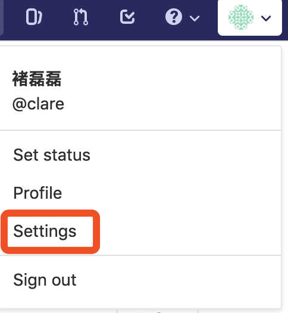
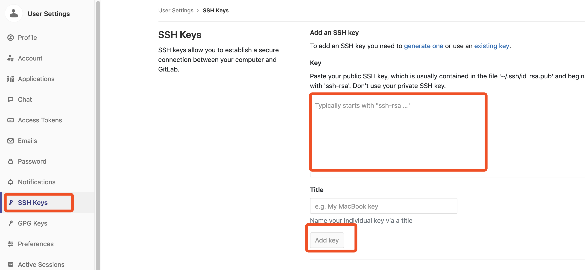

<!DOCTYPE HTML>
<html lang="zh-hans" >
    <head>
        <meta charset="UTF-8">
        <meta content="text/html; charset=utf-8" http-equiv="Content-Type">
        <title>Git的使用 · git-book</title>
        <meta http-equiv="X-UA-Compatible" content="IE=edge" />
        <meta name="description" content="">
        <meta name="generator" content="GitBook 3.2.3">
        <meta name="author" content="clare">
        
        
    
    <link rel="stylesheet" href="../gitbook/style.css">

    
            
                
                <link rel="stylesheet" href="../gitbook/gitbook-plugin-splitter/splitter.css">
                
            
                
                <link rel="stylesheet" href="../gitbook/gitbook-plugin-anchor-navigation-ex/style/plugin.css">
                
            
                
                <link rel="stylesheet" href="../gitbook/gitbook-plugin-prism/prism-tomorrow.css">
                
            
                
                <link rel="stylesheet" href="../gitbook/gitbook-plugin-search/search.css">
                
            
                
                <link rel="stylesheet" href="../gitbook/gitbook-plugin-fontsettings/website.css">
                
            
        

    

    
        
    
        
    
        
    
        
    
        
    
        
    

        
    
    
    <meta name="HandheldFriendly" content="true"/>
    <meta name="viewport" content="width=device-width, initial-scale=1, user-scalable=no">
    <meta name="apple-mobile-web-app-capable" content="yes">
    <meta name="apple-mobile-web-app-status-bar-style" content="black">
    <link rel="apple-touch-icon-precomposed" sizes="152x152" href="../gitbook/images/apple-touch-icon-precomposed-152.png">
    <link rel="shortcut icon" href="../gitbook/images/favicon.ico" type="image/x-icon">

    
    <link rel="next" href="grpc.html" />
    
    
    <link rel="prev" href="dev.html" />
    

    </head>
    <body>
        
<div class="book">
    <div class="book-summary">
        
            
<div id="book-search-input" role="search">
    <input type="text" placeholder="输入并搜索" />
</div>

            
                <nav role="navigation">
                


<ul class="summary">
    
    
    
    

    

    
        
        
    
        <li class="chapter " data-level="1.1" data-path="../">
            
                <a href="../">
            
                    
                        <b>1.1.</b>
                    
                    介绍
            
                </a>
            

            
        </li>
    
        <li class="chapter " data-level="1.2" >
            
                <span>
            
                    
                        <b>1.2.</b>
                    
                    基础平台
            
                </span>
            

            
            <ul class="articles">
                
    
        <li class="chapter " data-level="1.2.1" data-path="dev.html">
            
                <a href="dev.html">
            
                    
                        <b>1.2.1.</b>
                    
                    JAVA开发环境的搭建
            
                </a>
            

            
        </li>
    
        <li class="chapter active" data-level="1.2.2" data-path="git.html">
            
                <a href="git.html">
            
                    
                        <b>1.2.2.</b>
                    
                    Git的使用
            
                </a>
            

            
        </li>
    
        <li class="chapter " data-level="1.2.3" data-path="grpc.html">
            
                <a href="grpc.html">
            
                    
                        <b>1.2.3.</b>
                    
                    GRPC的使用
            
                </a>
            

            
        </li>
    
        <li class="chapter " data-level="1.2.4" data-path="redis.html">
            
                <a href="redis.html">
            
                    
                        <b>1.2.4.</b>
                    
                    Redis的使用
            
                </a>
            

            
        </li>
    

            </ul>
            
        </li>
    

    

    <li class="divider"></li>

    <li>
        <a href="https://www.gitbook.com" target="blank" class="gitbook-link">
            本书使用 GitBook 发布
        </a>
    </li>
</ul>


                </nav>
            
        
    </div>

    <div class="book-body">
        
            <div class="body-inner">
                
                    

<div class="book-header" role="navigation">
    

    <!-- Title -->
    <h1>
        <i class="fa fa-circle-o-notch fa-spin"></i>
        <a href=".." >Git的使用</a>
    </h1>
</div>


                    <div class="page-wrapper" tabindex="-1" role="main">
                        <div class="page-inner">
                            
<div id="book-search-results">
    <div class="search-noresults">
    
                                <section class="normal markdown-section">
                                
                                <div id="anchor-navigation-ex-navbar"><i class="fa fa-navicon"></i><ul><li><span class="title-icon "></span><a href="#2-git-&#x7684;&#x4F7F;&#x7528;"><b>1. </b>2 GIT &#x7684;&#x4F7F;&#x7528;</a></li><ul><li><span class="title-icon "></span><a href="#21-&#x6982;&#x8FF0;"><b>1.1. </b>2.1 &#x6982;&#x8FF0;</a></li><li><span class="title-icon "></span><a href="#22-git-&#x7684;&#x5B89;&#x88C5;"><b>1.2. </b>2.2 Git &#x7684;&#x5B89;&#x88C5;</a></li><li><span class="title-icon "></span><a href="#23-git-&#x6CE8;&#x518C;&#x53CA;&#x914D;&#x7F6E;"><b>1.3. </b>2.3 Git &#x6CE8;&#x518C;&#x53CA;&#x914D;&#x7F6E;</a></li><li><span class="title-icon "></span><a href="#24-&#x6CE8;&#x518C;"><b>1.4. </b>2.4 &#x6CE8;&#x518C;</a></li><li><span class="title-icon "></span><a href="#25-&#x6FC0;&#x6D3B;&#x7528;&#x6237;"><b>1.5. </b>2.5 &#x6FC0;&#x6D3B;&#x7528;&#x6237;</a></li><li><span class="title-icon "></span><a href="#26-&#x8BBE;&#x7F6E;&#x5BC6;&#x94A5;"><b>1.6. </b>2.6 &#x8BBE;&#x7F6E;&#x5BC6;&#x94A5;</a></li><ul><li><span class="title-icon "></span><a href="#27-&#x4E0A;&#x4F20;&#x516C;&#x94A5;"><b>1.6.1. </b>2.7 &#x4E0A;&#x4F20;&#x516C;&#x94A5;</a></li><li><span class="title-icon "></span><a href="#28-&#x7F16;&#x8F91;git&#x914D;&#x7F6E;&#x6587;&#x4EF6;"><b>1.6.2. </b>2.8 &#x7F16;&#x8F91;Git&#x914D;&#x7F6E;&#x6587;&#x4EF6;</a></li><li><span class="title-icon "></span><a href="#29-git-&#x4F7F;&#x7528;&#x5165;&#x95E8;"><b>1.6.3. </b>2.9 Git &#x4F7F;&#x7528;&#x5165;&#x95E8;</a></li></ul></ul></ul></div><a href="#2-git-&#x7684;&#x4F7F;&#x7528;" id="anchorNavigationExGoTop"><i class="fa fa-arrow-up"></i></a><h1 id="2-git-&#x7684;&#x4F7F;&#x7528;"><a name="2-git-&#x7684;&#x4F7F;&#x7528;" class="anchor-navigation-ex-anchor" href="#2-git-&#x7684;&#x4F7F;&#x7528;"><i class="fa fa-link" aria-hidden="true"></i></a>1. 2 GIT &#x7684;&#x4F7F;&#x7528;</h1>
<h2 id="21-&#x6982;&#x8FF0;"><a name="21-&#x6982;&#x8FF0;" class="anchor-navigation-ex-anchor" href="#21-&#x6982;&#x8FF0;"><i class="fa fa-link" aria-hidden="true"></i></a>1.1. 2.1 &#x6982;&#x8FF0;</h2>
<p>&#x5982;&#x679C;&#x4F60;&#x4E25;&#x8083;&#x5BF9;&#x5F85;&#x7F16;&#x7A0B;&#xFF0C;&#x5C31;&#x5FC5;&#x5B9A;&#x4F1A;&#x4F7F;&#x7528;&quot;&#x7248;&#x672C;&#x7BA1;&#x7406;&#x7CFB;&#x7EDF;&quot;&#xFF08;Version Control System&#xFF09;&#x3002;
&#x773C;&#x4E0B;&#x6700;&#x6D41;&#x884C;&#x7684;&quot;&#x7248;&#x672C;&#x7BA1;&#x7406;&#x7CFB;&#x7EDF;&quot;&#xFF0C;&#x975E;Git&#x83AB;&#x5C5E;&#x3002;</p>
<p></p>
<p>&#x76F8;&#x6BD4;&#x540C;&#x7C7B;&#x8F6F;&#x4EF6;&#xFF0C;Git&#x6709;&#x5F88;&#x591A;&#x4F18;&#x70B9;&#x3002;&#x5176;&#x4E2D;&#x5F88;&#x663E;&#x8457;&#x7684;&#x4E00;&#x70B9;&#xFF0C;&#x5C31;&#x662F;&#x7248;&#x672C;&#x7684;&#x5206;&#x652F;&#xFF08;branch&#xFF09;&#x548C;&#x5408;&#x5E76;&#xFF08;merge&#xFF09;&#x5341;&#x5206;&#x65B9;&#x4FBF;&#x3002;&#x6709;&#x4E9B;&#x4F20;&#x7EDF;&#x7684;&#x7248;&#x672C;&#x7BA1;&#x7406;&#x8F6F;&#x4EF6;&#xFF0C;&#x5206;&#x652F;&#x64CD;&#x4F5C;&#x5B9E;&#x9645;&#x4E0A;&#x4F1A;&#x751F;&#x6210;&#x4E00;&#x4EFD;&#x73B0;&#x6709;&#x4EE3;&#x7801;&#x7684;&#x7269;&#x7406;&#x62F7;&#x8D1D;&#xFF0C;&#x800C;Git&#x53EA;&#x751F;&#x6210;&#x4E00;&#x4E2A;&#x6307;&#x5411;&#x5F53;&#x524D;&#x7248;&#x672C;&#xFF08;&#x53C8;&#x79F0;&quot;&#x5FEB;&#x7167;&quot;&#xFF09;&#x7684;&#x6307;&#x9488;&#xFF0C;&#x56E0;&#x6B64;&#x975E;&#x5E38;&#x5FEB;&#x6377;&#x6613;&#x7528;&#x3002;
&#x4F46;&#x662F;&#xFF0C;&#x592A;&#x65B9;&#x4FBF;&#x4E86;&#x4E5F;&#x4F1A;&#x4EA7;&#x751F;&#x526F;&#x4F5C;&#x7528;&#x3002;&#x5982;&#x679C;&#x4F60;&#x4E0D;&#x52A0;&#x6CE8;&#x610F;&#xFF0C;&#x5F88;&#x53EF;&#x80FD;&#x4F1A;&#x7559;&#x4E0B;&#x4E00;&#x4E2A;&#x679D;&#x8282;&#x8513;&#x751F;&#x3001;&#x56DB;&#x5904;&#x5F00;&#x653E;&#x7684;&#x7248;&#x672C;&#x5E93;&#xFF0C;&#x5230;&#x5904;&#x90FD;&#x662F;&#x5206;&#x652F;&#xFF0C;&#x5B8C;&#x5168;&#x770B;&#x4E0D;&#x51FA;&#x4E3B;&#x5E72;&#x53D1;&#x5C55;&#x7684;&#x8109;&#x7EDC;&#x3002;</p>
<p></p>
<p>Vincent Driessen&#x63D0;&#x51FA;&#x4E86;&#x4E00;&#x4E2A;&#x5206;&#x652F;&#x7BA1;&#x7406;&#x7684;&#x7B56;&#x7565;&#xFF0C;&#x6211;&#x89C9;&#x5F97;&#x975E;&#x5E38;&#x503C;&#x5F97;&#x501F;&#x9274;&#x3002;&#x5B83;&#x53EF;&#x4EE5;&#x4F7F;&#x5F97;&#x7248;&#x672C;&#x5E93;&#x7684;&#x6F14;&#x8FDB;&#x4FDD;&#x6301;&#x7B80;&#x6D01;&#xFF0C;&#x4E3B;&#x5E72;&#x6E05;&#x6670;&#xFF0C;&#x5404;&#x4E2A;&#x5206;&#x652F;&#x5404;&#x53F8;&#x5176;&#x804C;&#x3001;&#x4E95;&#x4E95;&#x6709;&#x6761;&#x3002;&#x7406;&#x8BBA;&#x4E0A;&#xFF0C;&#x8FD9;&#x4E9B;&#x7B56;&#x7565;&#x5BF9;&#x6240;&#x6709;&#x7684;&#x7248;&#x672C;&#x7BA1;&#x7406;&#x7CFB;&#x7EDF;&#x90FD;&#x9002;&#x7528;&#xFF0C;Git&#x53EA;&#x662F;&#x7528;&#x6765;&#x4E3E;&#x4F8B;&#x800C;&#x5DF2;&#x3002;&#x5982;&#x679C;&#x4F60;&#x4E0D;&#x719F;&#x6089;Git&#xFF0C;&#x8DF3;&#x8FC7;&#x4E3E;&#x4F8B;&#x90E8;&#x5206;&#x5C31;&#x53EF;&#x4EE5;&#x4E86;&#x3002;</p>
<h2 id="22-git-&#x7684;&#x5B89;&#x88C5;"><a name="22-git-&#x7684;&#x5B89;&#x88C5;" class="anchor-navigation-ex-anchor" href="#22-git-&#x7684;&#x5B89;&#x88C5;"><i class="fa fa-link" aria-hidden="true"></i></a>1.2. 2.2 Git &#x7684;&#x5B89;&#x88C5;</h2>
<p><a href="https://github.com/git-for-windows/git/releases/download/v2.20.1.windows.1/Git-2.20.1-64-bit.exe" target="_blank">Git &#x4E0B;&#x8F7D;</a></p>
<p>&#x4E0B;&#x8F7D;&#x6210;&#x529F;&#x540E;&#x76F4;&#x63A5;&#x70B9;&#x51FB;&#x5B89;&#x88C5;&#x5373;&#x53EF;&#x3002;</p>
<h2 id="23-git-&#x6CE8;&#x518C;&#x53CA;&#x914D;&#x7F6E;"><a name="23-git-&#x6CE8;&#x518C;&#x53CA;&#x914D;&#x7F6E;" class="anchor-navigation-ex-anchor" href="#23-git-&#x6CE8;&#x518C;&#x53CA;&#x914D;&#x7F6E;"><i class="fa fa-link" aria-hidden="true"></i></a>1.3. 2.3 Git &#x6CE8;&#x518C;&#x53CA;&#x914D;&#x7F6E;</h2>
<p>&#x5728;&#x6D4F;&#x89C8;&#x5668;&#x8F93;&#x5165;<code>https://gitlab.sissyun.com.cn</code> &#x6253;&#x5F00;Gitlab&#x5BA2;&#x6237;&#x7AEF;</p>
<h2 id="24-&#x6CE8;&#x518C;"><a name="24-&#x6CE8;&#x518C;" class="anchor-navigation-ex-anchor" href="#24-&#x6CE8;&#x518C;"><i class="fa fa-link" aria-hidden="true"></i></a>1.4. 2.4 &#x6CE8;&#x518C;</h2>
<p>&#x7279;&#x522B;&#x6CE8;&#x610F;&#x4E0B;&#x9762;&#x7684;&#x683C;&#x5F0F;&#xFF0C;&#x540D;&#x5B57;&#x7528;&#x4E2D;&#x6587;&#xFF0C;&#x7528;&#x6237;&#x540D;&#x4F7F;&#x7528;&#x5168;&#x5C0F;&#x5199;&#x62FC;&#x97F3;,  &#x5E76;&#x4F7F;&#x7528;&#x516C;&#x53F8;&#x90AE;&#x7BB1;&#x3002;
&#x5982;&#x679C;&#x4F60;&#x7684;&#x540D;&#x5B57;&#x662F;&#xFF1A;&#x5F20;&#x4E09;&#xFF0C;</p>
<ul>
<li>&#x59D3;&#x540D;&#xFF08;name&#xFF09;&#x586B;&#x5199;&#x4E2D;&#x6587;&#x540D;&#xFF1A;&#x5F20;&#x4E09;</li>
<li>&#x7528;&#x6237;&#x540D;&#xFF08;username&#xFF09;&#x586B;&#x5199;&#x4F60;&#x7684;&#x5168;&#x540D;&#x62FC;&#x97F3;&#xFF1A;zhangsan</li>
<li>&#x90AE;&#x7BB1;&#x662F;&#x4F7F;&#x7528;&#x516C;&#x53F8;&#x90AE;&#x7BB1;&#xFF0C;&#x4E0D;&#x8981;&#x7528;&#x79C1;&#x4EBA;&#x90AE;&#x7BB1;&#xFF1A;zhang.san@ssi.com.</li>
</ul>
<p>&#x8BF7;&#x8BB0;&#x4F4F;&#x81EA;&#x5DF1;&#x8BBE;&#x7F6E;&#x7684;&#x5BC6;&#x7801;&#xFF0C;&#x8981;&#x6C42;8&#x4F4D;&#xFF0C;&#x5E76;&#x5305;&#x542B;&#x82F1;&#x6587;&#x5B57;&#x6BCD;&#x5927;&#x3001;&#x5C0F;&#x5199;&#x53CA;&#x6570;&#x5B57;&#xFF0C;&#x5982;&#xFF1A;pA5wOldy&#xFF0C;&#x5982;&#x679C;&#x4F60;&#x6CA1;&#x5B89;&#x88C5;&#x8981;&#x6C42;&#x6CE8;&#x518C;&#xFF0C;&#x4F60;&#x5C06;&#x65E0;&#x6CD5;&#x767B;&#x5F55;Gitlab&#x3002;</p>
<p></p>
<h2 id="25-&#x6FC0;&#x6D3B;&#x7528;&#x6237;"><a name="25-&#x6FC0;&#x6D3B;&#x7528;&#x6237;" class="anchor-navigation-ex-anchor" href="#25-&#x6FC0;&#x6D3B;&#x7528;&#x6237;"><i class="fa fa-link" aria-hidden="true"></i></a>1.5. 2.5 &#x6FC0;&#x6D3B;&#x7528;&#x6237;</h2>
<p>&#x6FC0;&#x6D3B;&#x4F60;&#x7684;&#x8D26;&#x6237;</p>
<p>&#x63A5;&#x4E0B;&#x6765;&#x53BB;&#x90AE;&#x7BB1;&#x67E5;&#x770B;&#x4F60;&#x7684;&#x90AE;&#x4EF6;&#xFF0C;&#x4F60;&#x5F88;&#x5FEB;&#x4F1A;&#x6536;&#x5230;&#x6765;&#x81EA; Gitlab &#x7684;&#x90AE;&#x4EF6;,&#x6309;&#x7167;&#x63D0;&#x793A;&#x6FC0;&#x6D3B;&#x4F60;&#x7684;&#x8D26;&#x6237;&#x3002;&#xFF08;&#x5982;&#x679C;&#x6CA1;&#x6536;&#x5230;&#x6FC0;&#x6D3B;&#x90AE;&#x4EF6;&#xFF0C;&#x8BF7;&#x8054;&#x7CFB;&#x4F60;&#x7684;&#x9879;&#x76EE;&#x7ECF;&#x7406;&#xFF09;</p>
<h2 id="26-&#x8BBE;&#x7F6E;&#x5BC6;&#x94A5;"><a name="26-&#x8BBE;&#x7F6E;&#x5BC6;&#x94A5;" class="anchor-navigation-ex-anchor" href="#26-&#x8BBE;&#x7F6E;&#x5BC6;&#x94A5;"><i class="fa fa-link" aria-hidden="true"></i></a>1.6. 2.6 &#x8BBE;&#x7F6E;&#x5BC6;&#x94A5;</h2>
<p>&#x56DE;&#x5230;&#x64CD;&#x4F5C;&#x7CFB;&#x7EDF;&#x547D;&#x4EE4;&#x63D0;&#x793A;&#x7B26;&#x4E0B;&#xFF08;windows&#x7528;&#x6237;&#x8BF7;&#x7528;git bash&#x7EC8;&#x7AEF;&#xFF09;&#x751F;&#x6210;ssh&#x5BC6;&#x94A5;&#x53CA;&#x8BBE;&#x7F6E;git&#x7528;&#x6237;&#x4FE1;&#x606F;, &#x6CE8;&#x610F;&#x5982;&#x679C;&#x4F60;&#x5728;&#x8FD0;&#x884C;ssh-keygen&#x662F;&#x8BBE;&#x7F6E;&#x4E86;&#x5BC6;&#x7801;&#xFF0C;&#x90A3;&#x4E48;&#x4F60;&#x4EE5;&#x540E;&#x7684;git&#x64CD;&#x4F5C;&#x4E5F;&#x8981;&#x8F93;&#x5165;&#x5BC6;&#x7801;&#xFF0C;&#x5426;&#x5219;&#x8FD9;&#x91CC;&#x53EF;&#x4EE5;&#x76F4;&#x63A5;&#x56DE;&#x8F66;&#xFF0C;&#x5373;&#x8FD0;&#x884C;ssh-keygen&#x4E0D;&#x4F7F;&#x7528;&#x5BC6;&#x7801;&#x3002;</p>
<pre class="language-"><code class="lang-bash">ssh-keygen -t rsa -b 4096 -C <span class="token string">&quot;zhang.san@ssi.com&quot;</span> 
<span class="token function">git</span> config --global user.name <span class="token string">&quot;Zhang San&quot;</span>
<span class="token function">git</span> config --global user.email <span class="token string">&quot;zhang.san@ssi.com&quot;</span>
</code></pre>
<h3 id="27-&#x4E0A;&#x4F20;&#x516C;&#x94A5;"><a name="27-&#x4E0A;&#x4F20;&#x516C;&#x94A5;" class="anchor-navigation-ex-anchor" href="#27-&#x4E0A;&#x4F20;&#x516C;&#x94A5;"><i class="fa fa-link" aria-hidden="true"></i></a>1.6.1. 2.7 &#x4E0A;&#x4F20;&#x516C;&#x94A5;</h3>
<p>&#x767B;&#x5F55;gitlab&#x540E;&#xFF0C;&#x5148;&#x70B9;&#x51FB; Profile Settings &gt;  </p>
<p></p>
<p>&#x521B;&#x5EFA;<code>rsa</code> &#x5BC6;&#x94A5;</p>
<pre class="language-"><code class="lang-bash">ssh-keygen -t rsa -C <span class="token string">&quot;youname@ssi.com&quot;</span>
</code></pre>
<p>&#x6700;&#x597D;&#x6253;&#x5F00;&#x5BC6;&#x94A5;&#x7BA1;&#x7406;&#x9875;&#x9762;</p>
<p> &#x5728;git bash&#x4E0B;&#xFF0C;&#x590D;&#x5236;&#x521A;&#x624D;&#x751F;&#x6210;&#x597D;&#x7684;ssh&#x516C;&#x5171;&#x5BC6;&#x94A5;&#x7684;&#x6587;&#x672C;&#x5185;&#x5BB9;&#x5E76;&#x7C98;&#x8D34;&#x5230;&#x4E0B;&#x9762;&#x6587;&#x672C;&#x6846;&#x5185;</p>
<ul>
<li>Windows&#xFF1A;c:\Users\yourname.ssh\id_rsa.pub; </li>
<li>Linux/Mac: ~/.ssh/id_rsa.pub</li>
</ul>
<pre class="language-"><code class="lang-bash">
<span class="token function">cat</span> ~/.ssh/id_rsa.pub
</code></pre>
<p></p>
<h3 id="28-&#x7F16;&#x8F91;git&#x914D;&#x7F6E;&#x6587;&#x4EF6;"><a name="28-&#x7F16;&#x8F91;git&#x914D;&#x7F6E;&#x6587;&#x4EF6;" class="anchor-navigation-ex-anchor" href="#28-&#x7F16;&#x8F91;git&#x914D;&#x7F6E;&#x6587;&#x4EF6;"><i class="fa fa-link" aria-hidden="true"></i></a>1.6.2. 2.8 &#x7F16;&#x8F91;Git&#x914D;&#x7F6E;&#x6587;&#x4EF6;</h3>
<p>&#x6211;&#x4EEC;&#x6765;&#x514B;&#x9686;&#x4E00;&#x4E2A;&#x6F14;&#x793A;&#x5E94;&#x7528;&#x4EE3;&#x7801;&#x4E0B;&#x6765;&#x6D4B;&#x8BD5;</p>
<pre class="language-"><code class="lang-bash"><span class="token function">git</span> clone ssh://git@gitlab.sissyun.com.cn:8022/frameworks/spring-boot-utils.git
</code></pre>
<h3 id="29-git-&#x4F7F;&#x7528;&#x5165;&#x95E8;"><a name="29-git-&#x4F7F;&#x7528;&#x5165;&#x95E8;" class="anchor-navigation-ex-anchor" href="#29-git-&#x4F7F;&#x7528;&#x5165;&#x95E8;"><i class="fa fa-link" aria-hidden="true"></i></a>1.6.3. 2.9 Git &#x4F7F;&#x7528;&#x5165;&#x95E8;</h3>
<p>&#x8BF4;&#x660E;&#xFF1A;</p>
<p>&#x4EE5;&#x4E0B;&#x6240;&#x6709;git&#x547D;&#x4EE4;&#x884C;&#x90FD;&#x5728;&#x7EC8;&#x7AEF;&#x4E0B;&#x64CD;&#x4F5C;&#x3002;</p>
<p><strong>&#x521B;&#x5EFA;&#x5206;&#x652F;</strong></p>
<p>&#x521B;&#x5EFA;&#x4E00;&#x4E2A;&#x540D;&#x79F0;&#x53EB; demo</p>
<pre class="language-"><code class="lang-bash"><span class="token function">git</span> checkout -b demo
</code></pre>
<p><strong>&#x67E5;&#x770B;&#x521B;&#x5EFA;&#x7684;&#x5206;&#x652F;</strong></p>
<pre class="language-"><code class="lang-bash"><span class="token function">git</span> branch &#x2013;a
</code></pre>
<p><strong>&#x67E5;&#x770B;&#x672C;&#x5730;&#x6587;&#x4EF6;&#x4FEE;&#x6539;&#x72B6;&#x6001;</strong></p>
<p>&#x63A5;&#x4E0B;&#x6765;&#x5C31;&#x53EF;&#x4EE5;&#x5F00;&#x53D1;&#x4E86;&#xFF0C;&#x5F00;&#x53D1;&#x5B8C;&#x6210;&#x540E;&#x67E5;&#x770B;&#x66F4;&#x6539;&#x8FC7;&#x7684;&#x6587;&#x4EF6;</p>
<pre class="language-"><code class="lang-bash"><span class="token function">git</span> status
</code></pre>
<p><strong>&#x4EE3;&#x7801;&#x63D0;&#x4EA4;</strong>
&#x5BA1;&#x67E5;&#x6CA1;&#x6709;&#x95EE;&#x9898;&#x540E;&#x63D0;&#x4EA4;&#x4EE3;&#x7801;&#x5230; feature &#x5206;&#x652F;</p>
<pre class="language-"><code class="lang-bash"><span class="token function">git</span> add <span class="token keyword">.</span>

<span class="token function">git</span> status

<span class="token function">git</span> commit

<span class="token punctuation">(</span>press i to input below text<span class="token punctuation">)</span>

<span class="token punctuation">[</span>Description<span class="token punctuation">]</span>: Your comments.

<span class="token punctuation">[</span>Reviewer<span class="token punctuation">]</span>: The name of reviewer

<span class="token punctuation">(</span>press esc and :wq to commit <span class="token punctuation">)</span>
</code></pre>
<p>&#x628A;&#x63D0;&#x4EA4;&#x5230;&#x4EE3;&#x7801;&#x63A8;&#x5230;&#x8FDC;&#x7A0B;&#x670D;&#x52A1;&#x5668;</p>
<pre class="language-"><code class="lang-bash"><span class="token function">git</span> push origin demo
</code></pre>
<p><strong>&#x4E3B;&#x5206;&#x652F;master</strong></p>
<p>&#x9996;&#x5148;&#xFF0C;&#x4EE3;&#x7801;&#x5E93;&#x5E94;&#x8BE5;&#x6709;&#x4E00;&#x4E2A;&#x3001;&#x4E14;&#x4EC5;&#x6709;&#x4E00;&#x4E2A;&#x4E3B;&#x5206;&#x652F;&#x3002;&#x6240;&#x6709;&#x63D0;&#x4F9B;&#x7ED9;&#x7528;&#x6237;&#x4F7F;&#x7528;&#x7684;&#x6B63;&#x5F0F;&#x7248;&#x672C;&#xFF0C;&#x90FD;&#x5728;&#x8FD9;&#x4E2A;&#x4E3B;&#x5206;&#x652F;&#x4E0A;&#x53D1;&#x5E03;&#x3002;</p>
<p>Git&#x4E3B;&#x5206;&#x652F;&#x7684;&#x540D;&#x5B57;&#xFF0C;&#x9ED8;&#x8BA4;&#x53EB;&#x505A;master&#x3002;&#x5B83;&#x662F;&#x81EA;&#x52A8;&#x5EFA;&#x7ACB;&#x7684;&#xFF0C;&#x7248;&#x672C;&#x5E93;&#x521D;&#x59CB;&#x5316;&#x4EE5;&#x540E;&#xFF0C;&#x9ED8;&#x8BA4;&#x5C31;&#x662F;&#x5728;&#x4E3B;&#x5206;&#x652F;&#x5728;&#x8FDB;&#x884C;&#x5F00;&#x53D1;&#x3002;</p>
<p><strong>&#x5F00;&#x53D1;&#x5206;&#x652F;development</strong></p>
<p>&#x4E3B;&#x5206;&#x652F;&#x53EA;&#x7528;&#x6765;&#x5206;&#x5E03;&#x91CD;&#x5927;&#x7248;&#x672C;&#xFF0C;&#x65E5;&#x5E38;&#x5F00;&#x53D1;&#x5E94;&#x8BE5;&#x5728;&#x53E6;&#x4E00;&#x6761;&#x5206;&#x652F;&#x4E0A;&#x5B8C;&#x6210;&#x3002;&#x6211;&#x4EEC;&#x628A;&#x5F00;&#x53D1;&#x7528;&#x7684;&#x5206;&#x652F;&#xFF0C;&#x53EB;&#x505A;development, &#x5F00;&#x53D1;&#x529F;&#x80FD;&#x6A21;&#x5757;&#x5E94;&#x8BE5;&#x65B0;&#x5EFA;feature&#x5206;&#x652F;&#xFF0C;&#x5355;&#x5143;&#x6D4B;&#x8BD5;&#x901A;&#x8FC7;&#x540E;&#x5408;&#x5E76;&#x5230;development&#x5206;&#x652F;&#xFF0C;&#x5408;&#x5E76;&#x5B8C;&#x6210;&#x540E;feature&#x5206;&#x652F;&#x5230;&#x751F;&#x547D;&#x5468;&#x671F;&#x7ED3;&#x675F;&#xFF0C;&#x5E94;&#x8BE5;&#x5220;&#x9664;&#x8BE5;&#x5206;&#x652F;&#x3002;</p>
<p>&#x8FD9;&#x4E2A;&#x5206;&#x652F;&#x53EF;&#x4EE5;&#x7528;&#x6765;&#x751F;&#x6210;&#x4EE3;&#x7801;&#x7684;&#x6700;&#x65B0;&#x9694;&#x591C;&#x7248;&#x672C;&#xFF08;nightly&#xFF09;&#x3002;&#x5982;&#x679C;&#x60F3;&#x6B63;&#x5F0F;&#x5BF9;&#x5916;&#x53D1;&#x5E03;&#xFF0C;&#x5C31;&#x5728;Master&#x5206;&#x652F;&#x4E0A;&#xFF0C;&#x5BF9;Development&#x5206;&#x652F;&#x8FDB;&#x884C;&quot;&#x5408;&#x5E76;&quot;&#xFF08;merge&#xFF09;&#x3002;
Git&#x521B;&#x5EFA;Development&#x5206;&#x652F;&#x7684;&#x547D;&#x4EE4;&#xFF1A;</p>
<pre class="language-"><code class="lang-bash"><span class="token function">git</span> checkout -b development
</code></pre>
<p>&#x5C06;Development&#x5206;&#x652F;&#x53D1;&#x5E03;&#x5230;Master&#x5206;&#x652F;&#x7684;&#x547D;&#x4EE4;&#xFF1A;</p>
<pre class="language-"><code class="lang-bash"><span class="token comment"># &#x5207;&#x6362;&#x5230;Master&#x5206;&#x652F;</span>
<span class="token function">git</span> checkout master

<span class="token comment"># &#x5BF9;Development&#x5206;&#x652F;&#x8FDB;&#x884C;&#x5408;&#x5E76;</span>
<span class="token function">git</span> merge --no-ff development
</code></pre>
<p>&#x8FD9;&#x91CC;&#x7A0D;&#x5FAE;&#x89E3;&#x91CA;&#x4E00;&#x4E0B;&#xFF0C;&#x4E0A;&#x4E00;&#x6761;&#x547D;&#x4EE4;&#x7684;--no-ff&#x53C2;&#x6570;&#x662F;&#x4EC0;&#x4E48;&#x610F;&#x601D;&#x3002;&#x9ED8;&#x8BA4;&#x60C5;&#x51B5;&#x4E0B;&#xFF0C;Git&#x6267;&#x884C;&quot;&#x5FEB;&#x8FDB;&#x5F0F;&#x5408;&#x5E76;&quot;&#xFF08;fast-farward merge&#xFF09;&#xFF0C;&#x4F1A;&#x76F4;&#x63A5;&#x5C06;Master&#x5206;&#x652F;&#x6307;&#x5411;Develop&#x5206;&#x652F;&#x3002;</p>
<p>&#x4F7F;&#x7528;--no-ff&#x53C2;&#x6570;&#x540E;&#xFF0C;&#x4F1A;&#x6267;&#x884C;&#x6B63;&#x5E38;&#x5408;&#x5E76;&#xFF0C;&#x5728;Master&#x5206;&#x652F;&#x4E0A;&#x751F;&#x6210;&#x4E00;&#x4E2A;&#x65B0;&#x8282;&#x70B9;&#x3002;&#x4E3A;&#x4E86;&#x4FDD;&#x8BC1;&#x7248;&#x672C;&#x6F14;&#x8FDB;&#x7684;&#x6E05;&#x6670;&#xFF0C;&#x6211;&#x4EEC;&#x5E0C;&#x671B;&#x91C7;&#x7528;&#x8FD9;&#x79CD;&#x505A;&#x6CD5;&#x3002;&#x5173;&#x4E8E;&#x5408;&#x5E76;&#x7684;&#x66F4;&#x591A;&#x89E3;&#x91CA;&#xFF0C;&#x8BF7;&#x53C2;&#x8003;Benjamin Sandofsky&#x7684;&#x300A;Understanding the Git Workflow&#x300B;&#x3002;</p>
<p><strong>&#x4E34;&#x65F6;&#x6027;&#x5206;&#x652F;</strong></p>
<p>&#x524D;&#x9762;&#x8BB2;&#x5230;&#x7248;&#x672C;&#x5E93;&#x7684;&#x4E24;&#x6761;&#x4E3B;&#x8981;&#x5206;&#x652F;&#xFF1A;Master&#x548C;Development&#x3002;&#x524D;&#x8005;&#x7528;&#x4E8E;&#x6B63;&#x5F0F;&#x53D1;&#x5E03;&#xFF0C;&#x540E;&#x8005;&#x7528;&#x4E8E;&#x65E5;&#x5E38;&#x5F00;&#x53D1;&#x3002;&#x5176;&#x5B9E;&#xFF0C;&#x5E38;&#x8BBE;&#x5206;&#x652F;&#x53EA;&#x9700;&#x8981;&#x8FD9;&#x4E24;&#x6761;&#x5C31;&#x591F;&#x4E86;&#xFF0C;&#x4E0D;&#x9700;&#x8981;&#x5176;&#x4ED6;&#x4E86;&#x3002;
&#x4F46;&#x662F;&#xFF0C;&#x9664;&#x4E86;&#x5E38;&#x8BBE;&#x5206;&#x652F;&#x4EE5;&#x5916;&#xFF0C;&#x8FD8;&#x6709;&#x4E00;&#x4E9B;&#x4E34;&#x65F6;&#x6027;&#x5206;&#x652F;&#xFF0C;&#x7528;&#x4E8E;&#x5E94;&#x5BF9;&#x4E00;&#x4E9B;&#x7279;&#x5B9A;&#x76EE;&#x7684;&#x7684;&#x7248;&#x672C;&#x5F00;&#x53D1;&#x3002;&#x4E34;&#x65F6;&#x6027;&#x5206;&#x652F;&#x4E3B;&#x8981;&#x6709;&#x4E09;&#x79CD;&#xFF1A;</p>
<ul>
<li>&#x529F;&#x80FD;&#xFF08;feature&#xFF09;&#x5206;&#x652F;</li>
<li>&#x9884;&#x53D1;&#x5E03;&#xFF08;release&#xFF09;&#x5206;&#x652F;</li>
<li>&#x4FEE;&#x8865;bug&#xFF08;fixbug&#xFF09;&#x5206;&#x652F;</li>
</ul>
<p>&#x8FD9;&#x4E09;&#x79CD;&#x5206;&#x652F;&#x90FD;&#x5C5E;&#x4E8E;&#x4E34;&#x65F6;&#x6027;&#x9700;&#x8981;&#xFF0C;&#x4F7F;&#x7528;&#x5B8C;&#x4EE5;&#x540E;&#xFF0C;&#x5E94;&#x8BE5;&#x5220;&#x9664;&#xFF0C;&#x4F7F;&#x5F97;&#x4EE3;&#x7801;&#x5E93;&#x7684;&#x5E38;&#x8BBE;&#x5206;&#x652F;&#x59CB;&#x7EC8;&#x53EA;&#x6709;Master&#x548C;Development&#x3002;</p>
<p><strong>&#x529F;&#x80FD;&#x5206;&#x652F;</strong></p>
<p>&#x63A5;&#x4E0B;&#x6765;&#xFF0C;&#x4E00;&#x4E2A;&#x4E2A;&#x6765;&#x770B;&#x8FD9;&#x4E09;&#x79CD;&quot;&#x4E34;&#x65F6;&#x6027;&#x5206;&#x652F;&quot;&#x3002;
&#x7B2C;&#x4E00;&#x79CD;&#x662F;&#x529F;&#x80FD;&#x5206;&#x652F;&#xFF0C;&#x5B83;&#x662F;&#x4E3A;&#x4E86;&#x5F00;&#x53D1;&#x67D0;&#x79CD;&#x7279;&#x5B9A;&#x529F;&#x80FD;&#xFF0C;&#x4ECE;Development&#x5206;&#x652F;&#x4E0A;&#x9762;&#x5206;&#x51FA;&#x6765;&#x7684;&#x3002;&#x5F00;&#x53D1;&#x5B8C;&#x6210;&#x540E;&#xFF0C;&#x8981;&#x518D;&#x5E76;&#x5165;Development&#x3002;</p>
<p>&#x529F;&#x80FD;&#x5206;&#x652F;&#x7684;&#x540D;&#x5B57;&#xFF0C;&#x53EF;&#x4EE5;&#x91C7;&#x7528;feature-*&#x7684;&#x5F62;&#x5F0F;&#x547D;&#x540D;&#x3002;
&#x521B;&#x5EFA;&#x4E00;&#x4E2A;&#x529F;&#x80FD;&#x5206;&#x652F;&#xFF1A;</p>
<pre class="language-"><code class="lang-bash"><span class="token function">git</span> checkout -b feature-x development
</code></pre>
<p>&#x5F00;&#x53D1;&#x5B8C;&#x6210;&#x540E;&#xFF0C;&#x5C06;&#x529F;&#x80FD;&#x5206;&#x652F;&#x5408;&#x5E76;&#x5230;development&#x5206;&#x652F;&#xFF1A;</p>
<pre class="language-"><code class="lang-bash"><span class="token function">git</span> checkout development
<span class="token function">git</span> merge --no-ff feature-x
</code></pre>
<p>&#x5220;&#x9664;feature&#x5206;&#x652F;&#xFF1A;</p>
<pre class="language-"><code class="lang-bash"><span class="token function">git</span> branch -d feature-x
</code></pre>
<p><strong>2.2.3.5 &#x9884;&#x53D1;&#x5E03;&#x5206;&#x652F;</strong></p>
<p>&#x7B2C;&#x4E8C;&#x79CD;&#x662F;&#x9884;&#x53D1;&#x5E03;&#x5206;&#x652F;&#xFF0C;&#x5B83;&#x662F;&#x6307;&#x53D1;&#x5E03;&#x6B63;&#x5F0F;&#x7248;&#x672C;&#x4E4B;&#x524D;&#xFF08;&#x5373;&#x5408;&#x5E76;&#x5230;Master&#x5206;&#x652F;&#x4E4B;&#x524D;&#xFF09;&#xFF0C;&#x6211;&#x4EEC;&#x53EF;&#x80FD;&#x9700;&#x8981;&#x6709;&#x4E00;&#x4E2A;&#x9884;&#x53D1;&#x5E03;&#x7684;&#x7248;&#x672C;&#x8FDB;&#x884C;&#x6D4B;&#x8BD5;&#x3002;
&#x9884;&#x53D1;&#x5E03;&#x5206;&#x652F;&#x662F;&#x4ECE;Development&#x5206;&#x652F;&#x4E0A;&#x9762;&#x5206;&#x51FA;&#x6765;&#x7684;&#xFF0C;&#x9884;&#x53D1;&#x5E03;&#x7ED3;&#x675F;&#x4EE5;&#x540E;&#xFF0C;&#x5FC5;&#x987B;&#x5408;&#x5E76;&#x8FDB;Development&#x548C;Master&#x5206;&#x652F;&#x3002;&#x5B83;&#x7684;&#x547D;&#x540D;&#xFF0C;&#x53EF;&#x4EE5;&#x91C7;&#x7528;release-*&#x7684;&#x5F62;&#x5F0F;&#x3002;
&#x521B;&#x5EFA;&#x4E00;&#x4E2A;&#x9884;&#x53D1;&#x5E03;&#x5206;&#x652F;&#xFF1A;</p>
<pre class="language-"><code class="lang-bash"><span class="token function">git</span> checkout -b release-1.0.0 development
</code></pre>
<p>&#x786E;&#x8BA4;&#x6CA1;&#x6709;&#x95EE;&#x9898;&#x540E;&#xFF0C;&#x5408;&#x5E76;&#x5230;master&#x5206;&#x652F;&#xFF1A;</p>
<pre class="language-"><code class="lang-bash"><span class="token function">git</span> checkout master
<span class="token function">git</span> merge --no-ff release-1.0.0
<span class="token comment"># &#x5BF9;&#x5408;&#x5E76;&#x751F;&#x6210;&#x7684;&#x65B0;&#x8282;&#x70B9;&#xFF0C;&#x505A;&#x4E00;&#x4E2A;&#x6807;&#x7B7E;</span>
<span class="token function">git</span> tag -a 1.0.0
</code></pre>
<p>&#x518D;&#x5408;&#x5E76;&#x5230;development&#x5206;&#x652F;&#xFF1A;</p>
<pre class="language-"><code class="lang-bash"><span class="token function">git</span> checkout development
<span class="token function">git</span> merge --no-ff release-1.0.0
</code></pre>
<p>&#x6700;&#x540E;&#xFF0C;&#x5220;&#x9664;&#x9884;&#x53D1;&#x5E03;&#x5206;&#x652F;&#xFF1A;</p>
<pre class="language-"><code class="lang-bash"><span class="token function">git</span> branch -d release-1.0.0
</code></pre>
<p><strong>&#x4FEE;&#x8865;bug&#x5206;&#x652F;</strong></p>
<p>&#x7B2C;&#x4E09;&#x79CD;&#x662F;&#x4FEE;&#x8865;bug&#x5206;&#x652F;&#x3002;&#x8F6F;&#x4EF6;&#x6B63;&#x5F0F;&#x53D1;&#x5E03;&#x4EE5;&#x540E;&#xFF0C;&#x96BE;&#x514D;&#x4F1A;&#x51FA;&#x73B0;bug&#x3002;&#x8FD9;&#x65F6;&#x5C31;&#x9700;&#x8981;&#x521B;&#x5EFA;&#x4E00;&#x4E2A;&#x5206;&#x652F;&#xFF0C;&#x8FDB;&#x884C;bug&#x4FEE;&#x8865;&#x3002;
&#x4FEE;&#x8865;bug&#x5206;&#x652F;&#x662F;&#x4ECE;Master&#x5206;&#x652F;&#x4E0A;&#x9762;&#x5206;&#x51FA;&#x6765;&#x7684;&#x3002;&#x4FEE;&#x8865;&#x7ED3;&#x675F;&#x4EE5;&#x540E;&#xFF0C;&#x518D;&#x5408;&#x5E76;&#x8FDB;Master&#x548C;Development&#x5206;&#x652F;&#x3002;&#x5B83;&#x7684;&#x547D;&#x540D;&#xFF0C;&#x53EF;&#x4EE5;&#x91C7;&#x7528;fixbug-*&#x7684;&#x5F62;&#x5F0F;&#x3002;</p>
<p>&#x521B;&#x5EFA;&#x4E00;&#x4E2A;&#x4FEE;&#x8865;bug&#x5206;&#x652F;&#xFF1A;</p>
<pre class="language-"><code class="lang-bash">&#x3000;&#x3000;<span class="token function">git</span> checkout -b fixbug-0.1 master
</code></pre>
<p>&#x4FEE;&#x8865;&#x7ED3;&#x675F;&#x540E;&#xFF0C;&#x5408;&#x5E76;&#x5230;master&#x5206;&#x652F;&#xFF1A;</p>
<pre class="language-"><code class="lang-bash">&#x3000;&#x3000;<span class="token function">git</span> checkout master
&#x3000;&#x3000;<span class="token function">git</span> merge --no-ff fixbug-0.1
&#x3000;&#x3000;<span class="token function">git</span> tag -a 0.1.1
</code></pre>
<p>&#x518D;&#x5408;&#x5E76;&#x5230;development&#x5206;&#x652F;&#xFF1A;</p>
<pre class="language-"><code class="lang-bash">&#x3000;&#x3000;<span class="token function">git</span> checkout development
&#x3000;&#x3000;<span class="token function">git</span> merge --no-ff fixbug-0.1
</code></pre>
<p>&#x6700;&#x540E;&#xFF0C;&#x5220;&#x9664;&quot;&#x4FEE;&#x8865;bug&#x5206;&#x652F;&quot;&#xFF1A;</p>
<pre class="language-"><code class="lang-bash">&#x3000;&#x3000;<span class="token function">git</span> branch -d fixbug-0.1
</code></pre>
<p><strong>&#x5BA2;&#x6237;&#x7A33;&#x5B9A;&#x7248;&#x5206;&#x652F;</strong></p>
<p>&#x5F53;&#x5E94;&#x7528;&#x53D1;&#x5E03;&#x7ED9;&#x591A;&#x4E2A;&#x5BA2;&#x6237;&#x4E0A;&#x7EBF;&#x65F6;&#xFF0C;&#x6211;&#x4EEC;&#x9700;&#x8981;&#x4ECE;master&#x521B;&#x5EFA;&#x5BA2;&#x6237;&#x5206;&#x652F; abc-xxx
&#x5206;&#x652F;&#x662F;&#x4ECE; master &#x5206;&#x652F;&#x4E0A;&#x9762;&#x5206;&#x51FA;&#x6765;&#x7684;&#xFF0C;&#x5B83;&#x7684;&#x547D;&#x540D;&#xFF0C;&#x53EF;&#x4EE5;&#x91C7;&#x7528;abc-xxx&#x7684;&#x5F62;&#x5F0F;&#xFF08;abc&#x4E3A;&#x5BA2;&#x6237;&#x9879;&#x76EE;&#x4EE3;&#x7801;, xxx&#x4E3A;&#x7248;&#x672C;&#x53F7;&#xFF09;&#x3002;</p>
<p>&#x521B;&#x5EFA;&#x4E00;&#x4E2A;&#x9884;&#x53D1;&#x5E03;&#x5206;&#x652F;&#xFF1A;</p>
<pre class="language-"><code class="lang-bash">&#x3000;&#x3000;<span class="token function">git</span> checkout -b abc-1.0.0 master
</code></pre>
<p>&#x6D4B;&#x8BD5;&#x6709;&#x95EE;&#x9898;&#x5C31;&#x5728;&#x8FD9;&#x4E2A;&#x5206;&#x652F;&#x6536;&#x655B;&#x518D;&#x63D0;&#x4EA4;&#x6D4B;&#x8BD5;&#xFF0C;&#x6700;&#x540E;&#x6D4B;&#x8BD5;&#x6CA1;&#x6709;&#x95EE;&#x9898;&#xFF0C;&#x4EE5;&#x6B64;&#x7248;&#x672C;&#x53D1;&#x5E03;&#x3002;</p>

                                
                                </section>
                            
    </div>
    <div class="search-results">
        <div class="has-results">
            
            <h1 class="search-results-title"><span class='search-results-count'></span> results matching "<span class='search-query'></span>"</h1>
            <ul class="search-results-list"></ul>
            
        </div>
        <div class="no-results">
            
            <h1 class="search-results-title">No results matching "<span class='search-query'></span>"</h1>
            
        </div>
    </div>
</div>

                        </div>
                    </div>
                
            </div>

            
                
                <a href="dev.html" class="navigation navigation-prev " aria-label="Previous page: JAVA开发环境的搭建">
                    <i class="fa fa-angle-left"></i>
                </a>
                
                
                <a href="grpc.html" class="navigation navigation-next " aria-label="Next page: GRPC的使用">
                    <i class="fa fa-angle-right"></i>
                </a>
                
            
        
    </div>

    <script>
        var gitbook = gitbook || [];
        gitbook.push(function() {
            gitbook.page.hasChanged({"page":{"title":"Git的使用","level":"1.2.2","depth":2,"next":{"title":"GRPC的使用","level":"1.2.3","depth":2,"path":"basics/grpc.md","ref":"basics/grpc.md","articles":[]},"previous":{"title":"JAVA开发环境的搭建","level":"1.2.1","depth":2,"path":"basics/dev.md","ref":"basics/dev.md","articles":[]},"dir":"ltr"},"config":{"plugins":["github","-donate","splitter","anchor-navigation-ex","-sharing","sharing-plus","-highlight","prism"],"styles":{"website":"styles/website.css","pdf":"styles/pdf.css","epub":"styles/epub.css","mobi":"styles/mobi.css","ebook":"styles/ebook.css","print":"styles/print.css"},"pluginsConfig":{"prism":{"css":["prismjs/themes/prism-tomorrow.css"]},"github":{"url":"https://github.com/ClareChu"},"splitter":{},"search":{},"sharing-plus":{"qq":false,"all":["facebook","google","twitter","instapaper","linkedin","pocket","stumbleupon"],"douban":false,"facebook":true,"weibo":false,"instapaper":false,"whatsapp":false,"hatenaBookmark":false,"twitter":true,"messenger":false,"line":false,"vk":false,"pocket":true,"google":false,"viber":false,"stumbleupon":false,"qzone":false,"linkedin":false},"lunr":{"maxIndexSize":1000000,"ignoreSpecialCharacters":false},"fontsettings":{"theme":"white","family":"serif","size":2},"anchor-navigation-ex":{"associatedWithSummary":false,"float":{"floatIcon":"fa fa-navicon","level1Icon":"","level2Icon":"","level3Icon":"","showLevelIcon":false},"mode":"float","multipleH1":true,"pageTop":{"level1Icon":"fa fa-hand-o-right","level2Icon":"fa fa-hand-o-right","level3Icon":"fa fa-hand-o-right","showLevelIcon":false},"printLog":false,"showGoTop":true,"showLevel":true},"sharing":{"qq":false,"all":["weibo","qq","qzone"],"douban":false,"facebook":false,"weibo":false,"instapaper":false,"whatsapp":false,"hatenaBookmark":false,"twitter":false,"messenger":false,"line":false,"vk":false,"pocket":false,"google":false,"viber":false,"stumbleupon":false,"qzone":false,"linkedin":false},"theme-default":{"styles":{"website":"styles/website.css","pdf":"styles/pdf.css","epub":"styles/epub.css","mobi":"styles/mobi.css","ebook":"styles/ebook.css","print":"styles/print.css"},"showLevel":true}},"theme":"default","author":"clare","pdf":{"pageNumbers":true,"fontSize":12,"fontFamily":"Arial","paperSize":"a4","chapterMark":"pagebreak","pageBreaksBefore":"/","margin":{"right":62,"left":62,"top":56,"bottom":56}},"structure":{"langs":"LANGS.md","readme":"README.md","glossary":"GLOSSARY.md","summary":"SUMMARY.md"},"variables":{},"title":"git-book","language":"zh-hans","links":{"sidebar":{}},"gitbook":"3.2.3","description":""},"file":{"path":"basics/git.md","mtime":"2019-02-20T06:49:17.679Z","type":"markdown"},"gitbook":{"version":"3.2.3","time":"2019-02-26T03:06:54.630Z"},"basePath":"..","book":{"language":""}});
        });
    </script>
</div>

        
    <script src="../gitbook/gitbook.js"></script>
    <script src="../gitbook/theme.js"></script>
    
        
        <script src="../gitbook/gitbook-plugin-github/plugin.js"></script>
        
    
        
        <script src="../gitbook/gitbook-plugin-splitter/splitter.js"></script>
        
    
        
        <script src="../gitbook/gitbook-plugin-sharing-plus/buttons.js"></script>
        
    
        
        <script src="../gitbook/gitbook-plugin-search/search-engine.js"></script>
        
    
        
        <script src="../gitbook/gitbook-plugin-search/search.js"></script>
        
    
        
        <script src="../gitbook/gitbook-plugin-lunr/lunr.min.js"></script>
        
    
        
        <script src="../gitbook/gitbook-plugin-lunr/search-lunr.js"></script>
        
    
        
        <script src="../gitbook/gitbook-plugin-fontsettings/fontsettings.js"></script>
        
    

    </body>
</html>

